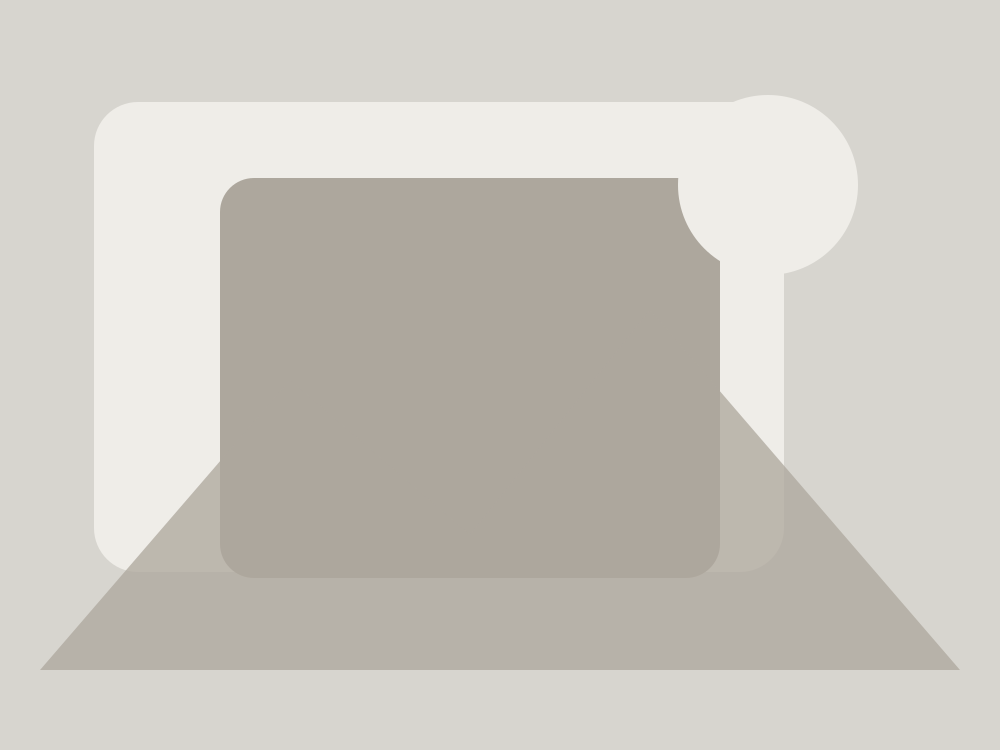

CSS DEVELOPMENT LAB · 15
Hover 图片卡片效果
产品、案例、Gallery、Portfolio 中最常见的视觉交互之一： 图片轻微放大、遮罩渐入、标题和操作按钮出现。 本实验同时处理键盘焦点和触控设备，避免把 Hover 当成唯一交互入口。
CORE DEMO
一张卡片，四层职责
图片负责内容，伪元素负责遮罩，信息层负责标题和操作， 外层卡片负责裁切与 Hover / Focus 状态。
LAYER MODEL
Hover 效果本质是图层变化
不需要 JavaScript。把卡片拆成“图片、遮罩、内容”三个视觉层， 再通过父级状态统一控制即可。
03Content
01Image
DESKTOP VS TOUCH
不要让 Hover 成为唯一入口
鼠标设备可以隐藏部分信息，Hover 时再显示；触控设备没有稳定 Hover， 因此手机端应该默认让标题与操作保持可见。
鼠标设备
Hover / Focus 时增强视觉效果
触控设备
信息默认可见，不依赖 Hover 才能操作
PRACTICAL RULES
四个实用原则
外层裁切
overflow: hidden 防止缩放后的图片跑出圆角容器。
图片轻缩放
建议控制在 1.03～1.08，避免 Hover 时视觉过于跳动。
遮罩用伪元素
不增加额外 HTML 节点，结构更干净。
Focus 同步
键盘聚焦时也应该看到与 Hover 相近的视觉反馈。